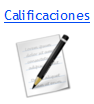
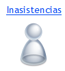
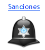
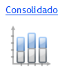
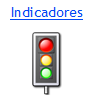

La presentación de la información en reportes es uno de los aspectos más importantes, ya que permiten al usuario obtener el resultado del procesamiento de la información que ha ingresado al sistema. Es por ello que resulta sumamente importante dar un tratamiento especial a los reportes que constituyen una de las principales salidas del sistema, es así como se presenta al usuario una barra con múltiples opciones que le permitirá una administración más efectiva de dichos reportes.
 Calificaciones

Permite analizar el desempeño de los alumnos con respecto a las calificaciones de los mismos. Este análisis de las calificaciones lo podemos hacer a nivel del curso analizando los promedios generales de cada materia, la desviación que tiene y la cantidad de notas. También podemos analizar lo mismo pero a partir de las notas de un solo alumno.
Otro análisis que podemos realizar es cuales son las notas mas frecuentes en una materia en un curso y hasta compararlo con otras materias. De la misma manera podemos ver las notas mas frecuentes que tiene en una materia un alumno.
|
 Inasistencias

Permite el análisis de la asistencia e inasistencia a clases de un alumno, sus llegadas tardes en un periodo de tiempo deseado.
|
 Sanciones

Permite realizar un análisis de la conducta del alumno y las sanciones y motivos por los cuales se le ha llamado la atención.
|
|

El presente reporte permite la consulta del promedio de calificaciones, sanciones e inasistencias para un alumno o grupo de alumnos en el ciclo lectivo actual o anteriores. En el caso de que se desee consultar el promedio de calificaciones, se podrá filtrar por materia, permitiendo una evaluación más detallada de la información.
|
|

Permite la comparación simultánea de todos los cursos de acuerdo a cada uno de los indicadores generales de desempeño planteados.
|
|
Centrado en el análisis del promedio de calificaciones por asignatura, permitiendo comparaciones en diversos ciclos lectivos y/o cursos.
|
|